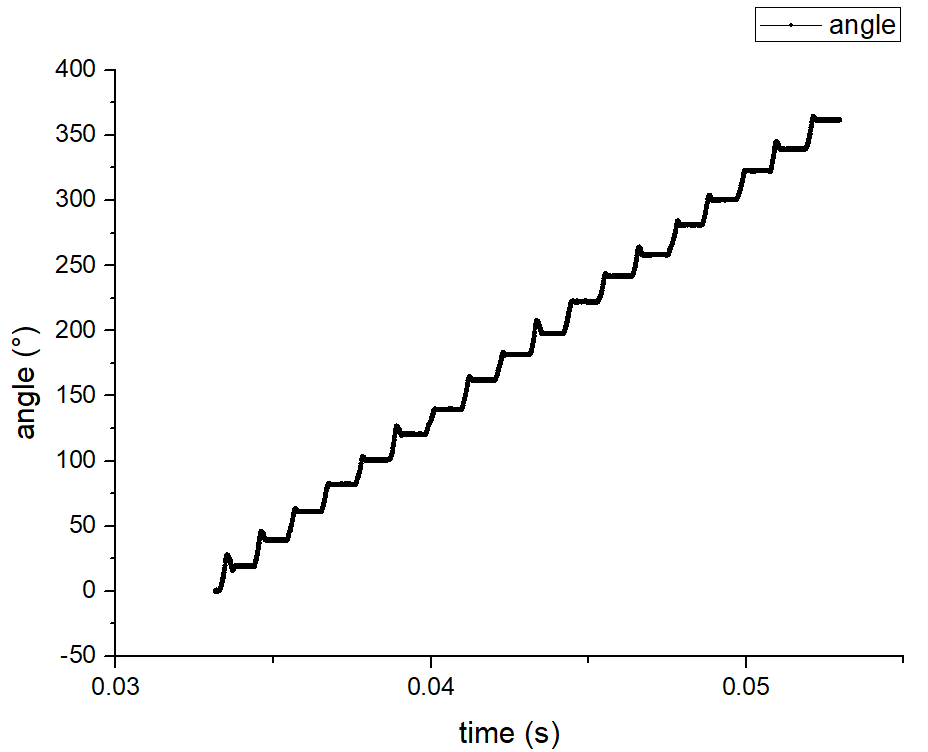
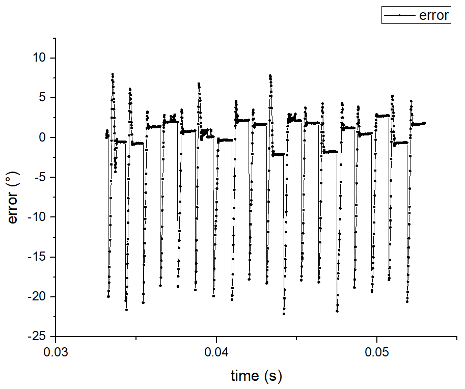
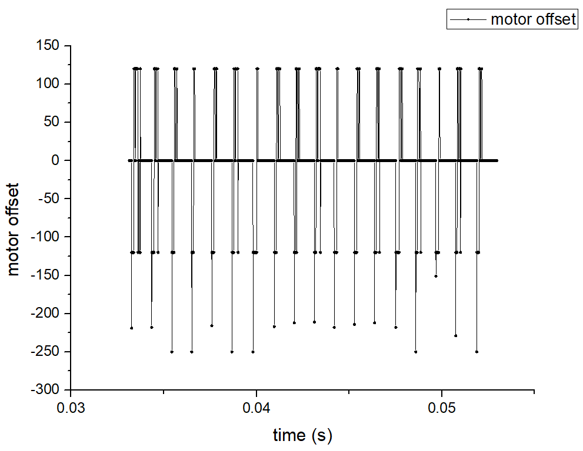
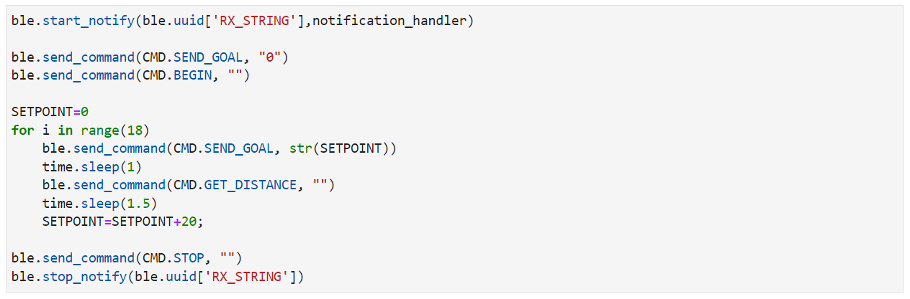
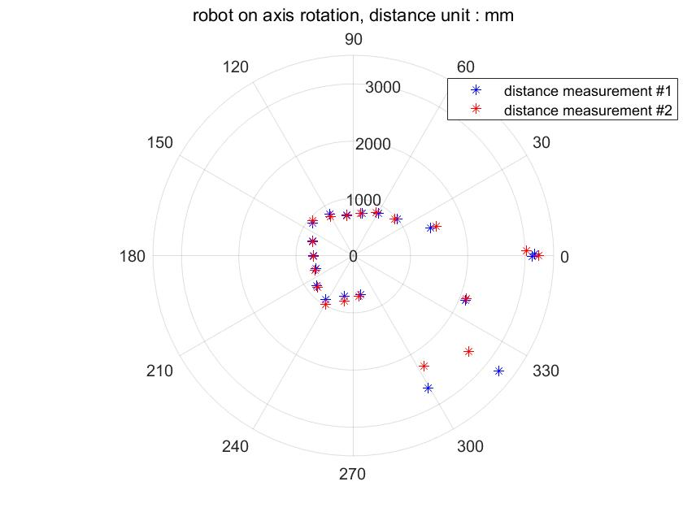
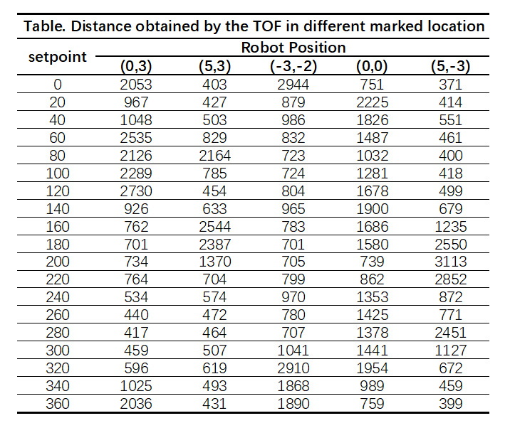
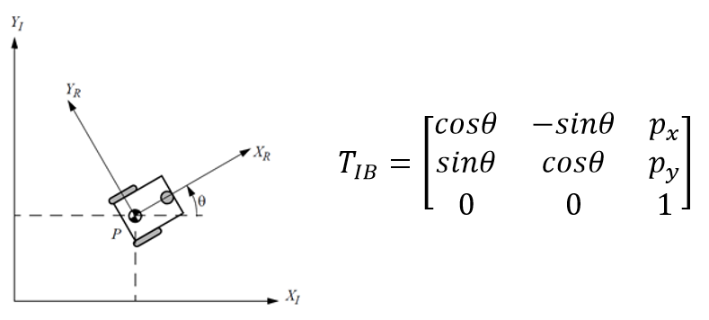
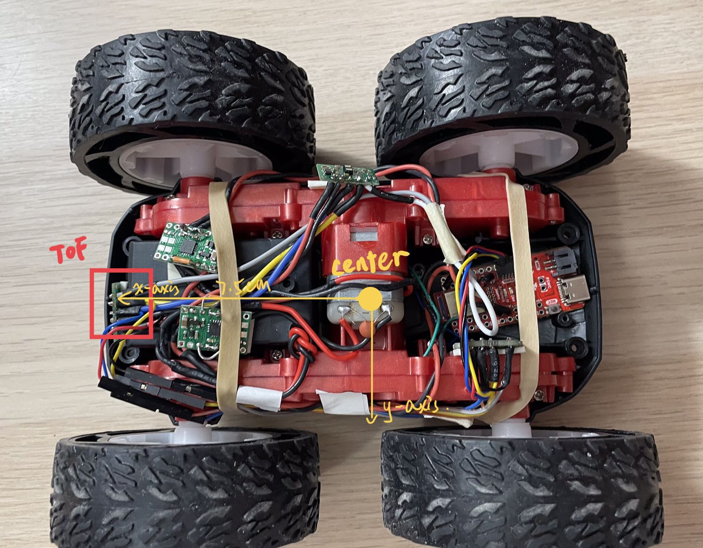

Task Description
The purpose of this lab is to build up a map of a static room. To build the map, I placed your robot in a series of marked-up locations, and made it spin around its axis while measuring the ToF readings. To be more specific, I created a PID controller that allowed the robot to do on-axis turns. Distances would be obtained by the TOF sensor every 20 degrees of rotation. The following is the detailed experimental procedure.
Orientation Control (PID)
The orientation control has already been implemented in Lab6 and can be used here directly. To be more specific, the robot obtains angular velocities by gyroscope and calculates real-time roll angle. If the error between the current roll angle and setpoint is larger than 5 degrees, a PID controller is going to calculate the motor offset and make the motors spin. P and D controls are enough here, and motor offset is equal to KP * error + KD * d_error / dt. According to my tests, the control performs best when KP is 1 and KD is 0.1.
To get a better map, more readings should be obtained during a 360-degree rotation. However, given the limitations of motor control and the accuracy of the IMU sensor, the orientation control is not able to be so accurate. The smaller the angle interval the more difficult the control will be. Therefore, I chose the angle interval to be 20 degrees and got 19 readings per 360-degree rotation (from 0° to 360°). In the following video, the set angle increases 20° every time. We can tell that the on axis turns of the robot is stable. Figures below show the angle, error and the output motor offset during the rotation.  
I set the motor offset range to be [120, 250] so that the robot would be able to rotate when the error was small. The angle error after each rotation was less than 2.5°. Meanwhile, the rotation axis of the robot may move 2-3cm. Therefore, when the robot implements an on-axis turn in the middle of a 4x4m square, empty room, the error of the map is roughly 2.5-3.5cm.Read out Distances
Once the robot rotates to the set orientation, the TOF sensor will measure the distance from the front of the car to the obstacle. I recorded 10 distance data and calculate the average. A Bluetooth command 'GET_DISTANCE' is used to send the average distance from Artemis to the computer. Here is the control program in jupyter notebook.

To see how accurate and repeatable the scan was, I did the rotations and measurements twice at the same position. The actual roll angles were recorded together with the distances. The polar plot below shows that the two scans are quite similar, especially when the obstacle is not so far away. However, when the distance increases, the accuracy of the TOF sensor drops. Generally, the measurements matched up with what I expected.

I repeated the measurements in several marked locations and got the data below. The robot always starts in the positive direction of the x-axis. The unit of distance is mm.
Merge and Plot the readings
Transformation Matrix
Given that the distances we obtained and the sensor position are in the robot position, we should change them into the global frame. The schematic diagram and transformation matrix are shown below.
[px,py] is the coordinates of the center of the robot. theta is the angle between the two x-axes of the global frame and the local frame.Get Obstacle Positions

The robot frame is shown in the figure above. The positive direction of the x-axis points to the front of the car, the y-axis is facing left, and the z-axis is perpendicular to the body up. The distance between the TOF sensor and the center of the robot is nearly 7.5cm. Thus, the sensor position in robot frame is [0.075,0] m. I creaetd a Matlab Script to caluculate the obstacle positions: First, we need to get the robot pose = [px,py,theta] according to the current marked location and robot orientation (global frame).Second, get the current sensor pose by changing it from robot frame to the inertial reference. That is: sensorPoseGlobal = T_IB * sensorPoseRobot = T_IB * [0.075,0].
Third, we can calulate the dx and dy by theta and distance. And the obstacle position is going to be [x,y] = sensorPoseGlobal + [dx,dy]. Repeat the above steps for each orientation in each marked location, we can get a series of points indicating the position of obstacles.

sensorOriginR=[0.075,0];
obstacles=[];
for i=1:size(dataStore.robotPose,1)
for j=0:18
theta=-j*20*pi/180;
robotPose=[dataStore.robotPose(i,:)*0.305,theta] % unit: meter
distance=dataStore.distances(i,j+1)*0.001
% sensor pose in the global frame
sensorOriginGlobal=robot2global(robotPose,sensorOriginR)
initangle=0;
angleGlobal=initangle+theta;
dx=distance*cos(angleGlobal)
dy=distance*sin(angleGlobal)
x_obstacle=dx+sensorOriginGlobal(1)
y_obstacle=dy+sensorOriginGlobal(2)
obstacles=[obstacles;x_obstacle,y_obstacle]
end
end
Line-Based Map
To convert the map into a format we can use in the simulator, I manually estimated where the actual walls/obstacles were based on the scatter plot. Here are the results: